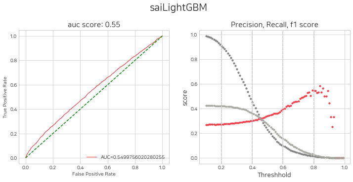
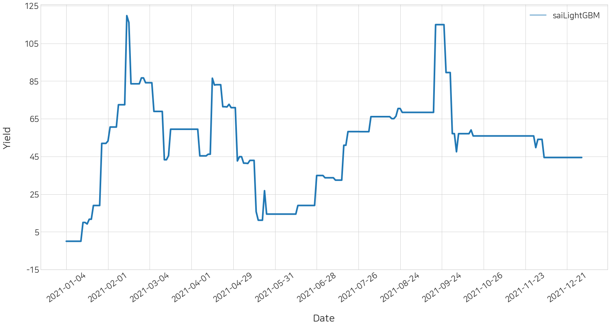

import pandas as pd
import os
import sys
import stockait as saistockait
본 글에서는 직접 개발한 파이썬 라이브러리 stockait 사용법을 정리합니다. stockait는 주가 빅데이터 연구를 위한 통합 라이브러리로, 데이터 수집부터 데이터 전처리, 모델 학습 모델 평가, 수익률 계산까지 모든 과정을 이 라이브러리에서 사용할 수 있습니다.
라이브러리의 전체적인 흐름 및 사용법을 다음의 과정으로 정리하도록 하겠습니다.
데이터 수집 - 데이터 전처리 - 트레이더 정의 - 트레이더 사용(모델 학습 & 평가) - 수익률 시뮬레이션
1. 데이터 수집
0) 나라 리스트 가져오기:
sai.get_countries()
1) 나라 별 시장 가져오기:sai.get_markets(country:list)
2) 시장 별 종목코드 가져오기:sai.get_tickers(date:list, tickers:list=None)
3) 원하는 종목의 주가 데이터 수집:sai.load_data(date:list, tickers:list=None)
stockait는 총 41개의 나라와 69개의 주식 시장을 갖고 있습니다. 함수를 사용해서 이용 가능한 나라와 시장, 그리고 종목코드를 확인할 수 있습니다.
1) 나라 별 시장 가져오기
먼저, 특정 국가에 해당하는 시장을 불러오겠습니다. stockait에서 사용할 수 있는 국가들의 리스트도 get_countries 함수를 사용하여 불러올 수 있습니다.
check_countries = sai.get_countries()
print(check_countries)['Argentina', 'Australia', 'Austria', 'Belgium', 'Brazil', 'Canada', 'China', 'Denmark', 'Estonia', 'Finland', 'France', 'Germany', 'Greece', 'Hong Kong', 'Iceland', 'India', 'Indonesia', 'Ireland', 'Israel', 'Italy', 'Latvia', 'Lithuania', 'Malaysia', 'Mexico', 'Netherlands', 'New Zealand', 'Norway', 'Portugal', 'Qatar', 'Russia', 'Singapore', 'South Korea', 'Spain', 'Sweden', 'Switzerland', 'Taiwan', 'Thailand', 'Turkey', 'USA', 'United Kingdom', 'Venezuela']이용 가능한 나라 중에서 원하는 곳을 문자열로 넣으면,
lst_markets = sai.get_markets(country='South Korea')
print(len(lst_markets), lst_markets[:5])3 ['KOSPI', 'KOSDAQ', 'KONEX']위와 같이 South Korea의 이용가능한 주식 시장을 불러오게 됩니다.
2) 시장 별 종목코드 가져오기
위에서 확인한 시장을 리스트에 모두 넣어도 되고, 원하는 개별 시장을 넣어주어도 됩니다.
lst_tickers = sai.get_tickers(markets=['KOSPI'])
print(len(lst_tickers), lst_tickers[:5])920 ['095570', '006840', '282330', '027410', '138930']예시로, KOSPI 시장만 리스트에 넣어 get_tickers 함수를 사용하여 920개의 종목코드를 얻었습니다.
3) 원하는 종목의 주가 데이터 수집
연구하고자 하는 주가 데이터의 날짜와 종목코드 리스트를 넣어주면, 그에 해당하는 데이터를 불러올 수 있습니다.
raw_data = sai.load_data(date=['2016-01-01', '2021-12-31'], tickers=lst_tickers[:500])
print(raw_data.shape)
raw_data.head()100%|█████████████████████████████████████████████████████████████████████████████████████| 500/500 [00:31<00:00, 15.76it/s](690152, 7)| Code | Date | Open | High | Low | Close | Volume | |
|---|---|---|---|---|---|---|---|
| 0 | 000020 | 2016-01-04 | 8130 | 8150 | 7920 | 8140 | 281440 |
| 1 | 000020 | 2016-01-05 | 8040 | 8250 | 8000 | 8190 | 243179 |
| 2 | 000020 | 2016-01-06 | 8200 | 8590 | 8110 | 8550 | 609906 |
| 3 | 000020 | 2016-01-07 | 8470 | 8690 | 8190 | 8380 | 704752 |
| 4 | 000020 | 2016-01-08 | 8210 | 8900 | 8130 | 8770 | 802330 |
위에서 얻은 920개의 종목코드를 넣어주어, 총 1266395행의 데이터를 정상적으로 불러왔습니다.
2. 데이터 전처리
1) 보조지표 추가 :
sai.add_index(data:pd.DataFrame(), index_list:list)
2) 스케일링:sai.scaling(data:pd.DataFrame(), scaler_type:String, window_size:Int=None)
3) 시계열 데이터 변환:sai.time_series(data:pd.DataFrame(), day:Int=10)
1) 보조지표 추가
next_change는 익일 종가 변동율로, stockait에서 제공하는 기본 종속변수입니다.
‘next_change’stockait에서 제공하는, TA Package를 사용하여 계산되는 보조지표들입니다.
‘MA5’, ‘MA20’, ‘MA60’,‘MA120’, ‘next_change’, ‘ADI’,‘CMF’,‘VPT’,‘VMAP’, ‘BHB’,‘BLB’,‘KCH’,‘KCL’,‘KCM’,‘DCH’,‘DCL’,‘DCM’,‘UI’, ‘SMA’,‘EMA’,‘WMA’,‘MACD’,‘VIneg’,‘VIpos’,‘TRIX’,‘MI’,‘CCI’,‘DPO’,‘KST’,‘Ichimoku’,‘ParabolicSAR’,‘STC’, ‘RSI’,‘SRSI’,‘TSI’,‘UO’,‘SR’,‘WR’,‘AO’,‘ROC’,‘PPO’,‘PVO’
check_index = ['MA5', 'MA20', 'MA60','MA120',
'next_change',
'ADI','CMF','VPT','VMAP',
'BHB','BLB','KCH','KCL','KCM','DCH','DCL','DCM','UI',
'SMA','EMA','WMA','MACD','VIneg','VIpos','TRIX','MI','CCI','DPO','KST','Ichimoku','ParabolicSAR','STC',
'RSI','SRSI','TSI','UO','SR','WR','AO','ROC','PPO','PVO']
check_df = sai.add_index(data=raw_data, index_list=check_index)
check_df100%|█████████████████████████████████████████████████████████████████████████████████████| 495/495 [07:13<00:00, 1.14it/s]| Code | Date | Open | High | Low | Close | Volume | Change | MA5 | MA20 | ... | RSI | SRSI | TSI | UO | SR | WR | AO | ROC | PPO | PVO | |
|---|---|---|---|---|---|---|---|---|---|---|---|---|---|---|---|---|---|---|---|---|---|
| 0 | 000020 | 2016-06-29 | 9850 | 10100 | 9700 | 9750 | 352292 | -0.001025 | 9544.0 | 10210.0 | ... | 45.763505 | 0.529126 | -8.116135 | 0.0 | 41.176471 | -58.823529 | -827.794118 | -3.940887 | -1.408719 | -11.019576 |
| 1 | 000020 | 2016-06-30 | 9850 | 10400 | 9760 | 10100 | 466248 | 0.035897 | 9618.0 | 10195.0 | ... | 51.232344 | 0.875363 | -6.553028 | 0.0 | 54.901961 | -45.098039 | -765.088235 | -2.415459 | -1.124410 | -9.119594 |
| 2 | 000020 | 2016-07-01 | 10200 | 10200 | 9960 | 9960 | 208228 | -0.013861 | 9794.0 | 10148.0 | ... | 49.099659 | 0.767924 | -5.911240 | 0.0 | 49.411765 | -50.588235 | -624.205882 | -4.230769 | -1.001426 | -12.558989 |
| 3 | 000020 | 2016-07-04 | 10000 | 10400 | 9900 | 10400 | 275210 | 0.044177 | 9994.0 | 10135.5 | ... | 55.385557 | 1.000000 | -3.312304 | 0.0 | 66.666667 | -33.333333 | -427.205882 | -0.952381 | -0.541344 | -13.975141 |
| 4 | 000020 | 2016-07-05 | 10400 | 10450 | 10200 | 10350 | 156010 | -0.004808 | 10112.0 | 10118.0 | ... | 54.560981 | 0.961700 | -1.483696 | 0.0 | 64.705882 | -35.294118 | -266.529412 | 1.970443 | -0.216142 | -17.711174 |
| ... | ... | ... | ... | ... | ... | ... | ... | ... | ... | ... | ... | ... | ... | ... | ... | ... | ... | ... | ... | ... | ... |
| 631159 | 383220 | 2021-12-23 | 177600 | 179400 | 175800 | 176000 | 49393 | -0.00565 | 178240.0 | 173970.0 | ... | 50.940761 | 0.253349 | 4.242959 | 0.0 | 47.169811 | -52.830189 | 739.411765 | 1.033295 | 0.479735 | -7.390941 |
| 631160 | 383220 | 2021-12-24 | 177200 | 177200 | 164400 | 176000 | 53197 | 0.0 | 177160.0 | 174320.0 | ... | 50.940761 | 0.253349 | 3.921902 | 0.0 | 67.441860 | -32.558140 | -27.058824 | 0.686499 | 0.428087 | -4.519611 |
| 631161 | 383220 | 2021-12-27 | 178000 | 181000 | 175600 | 179000 | 42262 | 0.017045 | 177000.0 | 174870.0 | ... | 55.627962 | 0.666579 | 4.893728 | 0.0 | 84.883721 | -15.116279 | 347.647059 | 1.820250 | 0.518392 | -4.275590 |
| 631162 | 383220 | 2021-12-28 | 180200 | 189800 | 178400 | 189400 | 78018 | 0.058101 | 179480.0 | 176040.0 | ... | 67.293872 | 1.000000 | 9.859346 | 0.0 | 98.425197 | -1.574803 | 1632.941176 | 8.975834 | 1.049621 | 2.260368 |
| 631163 | 383220 | 2021-12-29 | 191400 | 199600 | 191400 | 195800 | 74152 | 0.033791 | 183240.0 | 177580.0 | ... | 72.146913 | 1.000000 | 16.001174 | 0.0 | 89.204545 | -10.795455 | 4965.882353 | 13.441483 | 1.731157 | 6.254527 |
631164 rows × 50 columns
2) 주가 데이터 표준화
주가 데이터의 표준화는 이전에 잘 알려진 minmax, standard, robust 스케일러와, 전날 종가로 나누는 div-close 방법, 총 네 가지 방법을 제공합니다. 네가지 스케일러 모두 주가 관련 컬럼만 스케일링 합니다.
- minmax
- standard
- robust
- div-close
그 중 이 글에서는, div-close 방법을 사용하겠습니다.
check_scaled_KR = sai.scaling(data=check_df, scaler_type="div-close")
check_scaled_KR100%|█████████████████████████████████████████████████████████████████████████████████████| 489/489 [00:19<00:00, 24.99it/s]| Code | Date | Open | High | Low | Close | Volume | Change | MA5 | MA20 | ... | RSI | SRSI | TSI | UO | SR | WR | AO | ROC | PPO | PVO | |
|---|---|---|---|---|---|---|---|---|---|---|---|---|---|---|---|---|---|---|---|---|---|
| 0 | 000020 | 2016-06-29 | 1.010256 | 1.035897 | 0.994872 | 9750 | 352292 | -0.001025 | 0.978872 | 1.047179 | ... | 45.763505 | 0.529126 | -8.116135 | 0.0 | 41.176471 | -58.823529 | -827.794118 | -3.940887 | -1.408719 | -11.019576 |
| 1 | 000020 | 2016-06-30 | 1.010256 | 1.066667 | 1.001026 | 10100 | 466248 | 0.035897 | 0.986462 | 1.045641 | ... | 51.232344 | 0.875363 | -6.553028 | 0.0 | 54.901961 | -45.098039 | -765.088235 | -2.415459 | -1.124410 | -9.119594 |
| 2 | 000020 | 2016-07-01 | 1.009901 | 1.009901 | 0.986139 | 9960 | 208228 | -0.013861 | 0.969703 | 1.004752 | ... | 49.099659 | 0.767924 | -5.911240 | 0.0 | 49.411765 | -50.588235 | -624.205882 | -4.230769 | -1.001426 | -12.558989 |
| 3 | 000020 | 2016-07-04 | 1.004016 | 1.044177 | 0.993976 | 10400 | 275210 | 0.044177 | 1.003414 | 1.017620 | ... | 55.385557 | 1.000000 | -3.312304 | 0.0 | 66.666667 | -33.333333 | -427.205882 | -0.952381 | -0.541344 | -13.975141 |
| 4 | 000020 | 2016-07-05 | 1.0 | 1.004808 | 0.980769 | 10350 | 156010 | -0.004808 | 0.972308 | 0.972885 | ... | 54.560981 | 0.961700 | -1.483696 | 0.0 | 64.705882 | -35.294118 | -266.529412 | 1.970443 | -0.216142 | -17.711174 |
| ... | ... | ... | ... | ... | ... | ... | ... | ... | ... | ... | ... | ... | ... | ... | ... | ... | ... | ... | ... | ... | ... |
| 29 | 383220 | 2021-12-23 | 1.00339 | 1.013559 | 0.99322 | 176000 | 49393 | -0.00565 | 1.007006 | 0.982881 | ... | 50.940761 | 0.253349 | 4.242959 | 0.0 | 47.169811 | -52.830189 | 739.411765 | 1.033295 | 0.479735 | -7.390941 |
| 30 | 383220 | 2021-12-24 | 1.006818 | 1.006818 | 0.934091 | 176000 | 53197 | 0.0 | 1.006591 | 0.990455 | ... | 50.940761 | 0.253349 | 3.921902 | 0.0 | 67.441860 | -32.558140 | -27.058824 | 0.686499 | 0.428087 | -4.519611 |
| 31 | 383220 | 2021-12-27 | 1.011364 | 1.028409 | 0.997727 | 179000 | 42262 | 0.017045 | 1.005682 | 0.993580 | ... | 55.627962 | 0.666579 | 4.893728 | 0.0 | 84.883721 | -15.116279 | 347.647059 | 1.820250 | 0.518392 | -4.275590 |
| 32 | 383220 | 2021-12-28 | 1.006704 | 1.060335 | 0.996648 | 189400 | 78018 | 0.058101 | 1.002682 | 0.983464 | ... | 67.293872 | 1.000000 | 9.859346 | 0.0 | 98.425197 | -1.574803 | 1632.941176 | 8.975834 | 1.049621 | 2.260368 |
| 33 | 383220 | 2021-12-29 | 1.01056 | 1.053854 | 1.01056 | 195800 | 74152 | 0.033791 | 0.967476 | 0.937592 | ... | 72.146913 | 1.000000 | 16.001174 | 0.0 | 89.204545 | -10.795455 | 4965.882353 | 13.441483 | 1.731157 | 6.254527 |
631164 rows × 50 columns
3) 시계열 데이터로 변환
머신러닝 모델이 예측할 때 D0를 기준으로 그 다음날(D+1)의 종가 변화율을 예측하는데, 독립변수를 기준일(D0)로부터 n일 전의 데이터(D-n, D-n-1, D-n-2, …, D-1, D0)들로 구성하기 위한 변환입니다.
예를 들어, 아래 예제 코드는 이 D0 기준 10일치의 데이터로 변환된 것을 보여줍니다.
df_time_series = sai.time_series(check_df, day=10)
df_time_series_scaled = sai.time_series(check_scaled_KR, day=10)
df_time_series_scaled100%|█████████████████████████████████████████████████████████████████████████████████████| 489/489 [01:41<00:00, 4.83it/s]
100%|█████████████████████████████████████████████████████████████████████████████████████| 489/489 [01:41<00:00, 4.81it/s]| Code | Date | D-9_Open | D-9_High | D-9_Low | D-9_Close | D-9_Volume | D-9_Change | D-9_MA5 | D-9_MA20 | ... | D0_SRSI | D0_TSI | D0_UO | D0_SR | D0_WR | D0_AO | D0_ROC | D0_PPO | D0_PVO | next_change | |
|---|---|---|---|---|---|---|---|---|---|---|---|---|---|---|---|---|---|---|---|---|---|
| 0 | 000020 | 2016-07-12 | 1.010256 | 1.035897 | 0.994872 | 9750 | 352292 | -0.001025 | 0.978872 | 1.047179 | ... | 0.811861 | 6.313467 | 0.0 | 77.083333 | -22.916667 | 265.323529 | 16.189427 | 1.146515 | -6.811964 | -0.009479 |
| 1 | 000020 | 2016-07-13 | 1.010256 | 1.066667 | 1.001026 | 10100 | 466248 | 0.035897 | 0.986462 | 1.045641 | ... | 0.748510 | 6.418054 | 0.0 | 72.916667 | -27.083333 | 359.411765 | 11.170213 | 1.143441 | -9.808557 | -0.014354 |
| 2 | 000020 | 2016-07-14 | 1.009901 | 1.009901 | 0.986139 | 9960 | 208228 | -0.013861 | 0.969703 | 1.004752 | ... | 0.550088 | 5.793959 | 0.0 | 65.957447 | -34.042553 | 291.470588 | 5.532787 | 1.012207 | -13.948242 | -0.019417 |
| 3 | 000020 | 2016-07-15 | 1.004016 | 1.044177 | 0.993976 | 10400 | 275210 | 0.044177 | 1.003414 | 1.017620 | ... | 0.143497 | 4.337998 | 0.0 | 47.089947 | -52.910053 | 180.147059 | 3.589744 | 0.743307 | -15.318752 | 0.000000 |
| 4 | 000020 | 2016-07-18 | 1.000000 | 1.004808 | 0.980769 | 10350 | 156010 | -0.004808 | 0.972308 | 0.972885 | ... | 0.143497 | 3.148328 | 0.0 | 28.571429 | -71.428571 | 61.705882 | 0.000000 | 0.523834 | -18.136859 | -0.004950 |
| ... | ... | ... | ... | ... | ... | ... | ... | ... | ... | ... | ... | ... | ... | ... | ... | ... | ... | ... | ... | ... | ... |
| 19 | 383220 | 2021-12-22 | 1.006865 | 1.021739 | 0.996568 | 175800 | 16927 | 0.005721 | 1.008009 | 1.002574 | ... | 0.393969 | 4.627357 | 0.0 | 70.000000 | -30.000000 | 317.647059 | 0.454030 | 0.538685 | -10.077686 | -0.005650 |
| 20 | 383220 | 2021-12-23 | 0.988623 | 1.017065 | 0.987486 | 173800 | 16531 | -0.011377 | 0.995222 | 0.993857 | ... | 0.253349 | 4.242959 | 0.0 | 47.169811 | -52.830189 | 739.411765 | 1.033295 | 0.479735 | -7.390941 | 0.000000 |
| 21 | 383220 | 2021-12-24 | 1.005754 | 1.009206 | 0.990794 | 172600 | 16918 | -0.006904 | 1.002532 | 1.003337 | ... | 0.253349 | 3.921902 | 0.0 | 67.441860 | -32.558140 | -27.058824 | 0.686499 | 0.428087 | -4.519611 | 0.017045 |
| 22 | 383220 | 2021-12-27 | 1.000000 | 1.016222 | 0.990730 | 173000 | 18613 | 0.002317 | 1.008111 | 1.007532 | ... | 0.666579 | 4.893728 | 0.0 | 84.883721 | -15.116279 | 347.647059 | 1.820250 | 0.518392 | -4.275590 | 0.058101 |
| 23 | 383220 | 2021-12-28 | 1.000000 | 1.011561 | 0.991908 | 174000 | 18350 | 0.005780 | 1.004855 | 1.004104 | ... | 1.000000 | 9.859346 | 0.0 | 98.425197 | -1.574803 | 1632.941176 | 8.975834 | 1.049621 | 2.260368 | 0.033791 |
626274 rows × 473 columns
데이터의 크기가 크면, 위의 세가지 전처리 과정이 오래 걸릴 수 있습니다. 따라서 아래와 같이 데이터를 저장하고, 불러오는 방식을 추천합니다.
df_time_series.to_parquet("time_series.parquet")
df_time_series_scaled.to_parquet("time_series_scaled.parquet")df_time_series = pd.read_parquet("time_series.parquet")
df_time_series_scaled = pd.read_parquet("time_series_scaled.parquet")
df_time_series['Code'] = df_time_series['Code'].astype(str).str.zfill(6)
df_time_series_scaled['Code'] = df_time_series_scaled['Code'].astype(str).str.zfill(6)이제 학습, 시험데이터셋을 분리하겠습니다. 2016년부터 2021년까지의 데이터를 불러왔었는데, 2016년의 데이터는 보조지표 추가를 위해 임시로 불러온 것이므로 2017년~2020년을 학습데이터셋, 2021년을 시험 데이터셋으로 저장해주었습니다.
data = df_time_series # Data Before Scaling
data_scaled = df_time_series_scaled # Data After Scaling
# train, test dataset split
train_data = data[(data['Date'] >= '2017-01-01') & (data['Date'] <= '2020-12-31')]
test_data = data[(data['Date'] >= '2021-01-01') & (data['Date'] <= '2021-12-31')]
# train, test dataset split (scaled)
train_data_scaled = data_scaled[(data_scaled['Date'] >= '2017-01-01') & (data_scaled['Date'] <= '2020-12-31')]
test_data_scaled = data_scaled[(data_scaled['Date'] >= '2021-01-01') & (data_scaled['Date'] <= '2021-12-31')]
print(train_data.shape, test_data.shape)
print(train_data_scaled.shape, test_data_scaled.shape)(828290, 483) (217159, 483)
(828290, 483) (217159, 483)
3. 트레이더 정의
트레이더라는 개념을 사용합니다. 인공지능 모델 학습, 평가, 수익률 계산은 모두 트레이더를 통해 진행됩니다. 따라서, 위의 과정을 수행하기 위해 트레이더를 먼저 정의해야합니다.
- 트레이더는 크게 (1)
buyer(매수객체) 와 (2)seller(매도객체) 를 갖습니다.Buyer는 매수를 위한 객체이며, (1.1)conditional_buyer와 (1.2)machine learning_buyer가 존재합니다.
- (1.1)
conditional_buyer데이터 필터링 조건으로 매수를 결정하는 객체입니다. - (1.2)
machine learning_buyer머신러닝 모델을 사용하여 학습하고, 매수를 결정하는 객체이며, 모델을 정의하고 학습하는 역할을 합니다. - 마지막으로 위의 (1.1), (1.2) 의 조건을 결합하여 매수를 결정합니다.
Seller는 매도객체입니다. 기본적으로,Seller에SubSeller객체를 넣어주면, 다음날에 모두 매도하는 것으로 설정됩니다.
# List containing trader objects
# You can put a bunch of traders in here, and you can trade at once.
# See 'tutorials/01.trader_definition.ipynb' for a detailed example.
lst_trader = [] from lightgbm import LGBMClassifier
# conditional_buyer: Object that determines acquisition based on data filtering conditions
b1_lg = sai.ConditionalBuyer()
def sampling1(df): # Create a conditional function
condition1 = (-0.3 <= df.D0_Change) & (df.D0_Change <= 0.3) # Remove exceptions that exceed upper and lower limits
condition2 = (df.D0_Close * df.D0_Volume) >= 1000000000 # condition 1: Transaction amount of more than 1 billion won
condition3 = (-0.05 >= df.D0_Change) | (0.05 <= df.D0_Change) # condition 2: Today's stock price change rate is more than 5%
condition = condition1 & condition2 & condition3
return condition
b1_lg.condition = sampling1 # Define the condition function directly (sampling1) and store it in the condition property
# machinelearning_buyer: Object that determines acquisition by machine learning model
b2_lg = sai.MachinelearningBuyer()
# Save user-defined models to algorithm properties
scale_pos_weight = round(72/28 , 2)
params = { 'random_state' : 42,
'scale_pos_weight' : scale_pos_weight,
'learning_rate' : 0.1,
'num_iterations' : 1000,
'max_depth' : 4,
'n_jobs' : 30,
'boost_from_average' : False,
'objective' : 'binary' }
b2_lg.algorithm = LGBMClassifier( **params )
# SubSeller: Object that determines selling all of the following days
sell_all = sai.SubSeller()
# Trader Object
t1 = sai.Trader()
t1.name = 'saiLightGBM' # Trader's name
t1.label = 'class&0.02' # Set the Trader dependent variable (do not set if it is regression analysis)
t1.buyer = sai.Buyer([b1_lg, b2_lg]) # [ conditional buyer, machinelearning buyer ]
t1.seller = sai.Seller(sell_all)
lst_trader.append(t1)
4. 트레이더 사용 (모델 학습 및 평가)
1) 트레이더에 데이터셋 저장:
sai.save_dataset(lst_trader:list, train_data:pd.DataFrame(), test_data:pd.DataFrame(), train_data_scaled:pd.DataFrame()=None, test_data_scaled:pd.DataFrame()=None)
2) 모델 학습:sai.trader_train(lst_trader:list)
3) 모델 평가 및 임계값 설정:sai.get_eval_by_threshold(lst_trader),sai.set_threshold(lst_trader, lst_threshold:list, hisogram:bool=True)
1) 트레이더에 데이터셋 저장
트레이더 객체가 저장된 리스트와 학습, 시험 데이터셋을 인자에 넣어줍니다. 이 때, 앞서 표준화를 진행했다면, 표준화된 데이터셋도 함께 넣어줍니다.
[Types of Data Stored] - 원본 데이터셋 (training/test, 독립변수 / 종속변수_regression / 종속변수_classification) - 표준화 데이터셋 (training/test, 독립변수 / 종속변수_regression / 종속변수_classification)
sai.save_dataset(lst_trader, train_data, test_data, train_data_scaled, test_data_scaled)== saiLightGBM ==
== train_code_date: (828290, 2), test_code_date: (217159, 2) ==
== trainX: (828290, 480), testX: (217159, 480) ==
== trainX_scaled: (828290, 480), testX_scaled: (217159, 480) ==
== trainY: (828290,), testY: (217159,) ==
== trainY_classification: (828290,), testY_classification: (217159,) ==
saiLightGBM 객체에 모델 학습 및 평가에 필요한 데이터셋들을 생성하여 저장합니다.
2) 모델 학습
모델 학습은 각각의 트레이더에 저장된 데이터셋과 머신러닝 모델로 이루어집니다.
sai.trader_train(lst_trader) == saiLightGBM Model Fitting Completed ==앞서 설정한 조건들, 머신러닝 모델, 저장된 데이터셋으로 LightGBM 모델이 학습되었습니다.
3) 모델 평가 및 임계값 설정
모델 평가
네가지의 지표가 모델 성능 평가에 사용됩니다. (auc score, precision, recall, f1 score)
특히, 두번째 그래프는 모델의 예측 확률 임계값 별 평가지표인데, 점점 증가하는 precision을 유의깊게 확인하여 아래의 임계값 설정에 참고합니다.
sai.get_eval_by_threshold(lst_trader)
오른쪽 그래프에서 빨간 선이 정밀도입니다. 이 예시에서는 정밀도가 조금씩 점점 상승하다 0.6쯤 부터 눈에 띄게 상승하고, 임계값이 0.8일 때 다시 하락하는 추이를 보입니다. 특정 threshold, 즉 특정 예측 확률이상일 때 정밀도가 증가하면 해당 집단에서 예측이 잘 되어진다는 소리이므로, 그러한 threshold를 적절히 설정해주도록 합니다.
임계값 설정
주식의 매수를 결정하기 위해, machinelearning_buyer 객체의 threshold를 설정해야 합니다. 여기서 threshold는 머신러닝 모델의 예측 확률 임계값입니다. 우리가 학습시킨 머신러닝 모델을 예로 들어, 다음 날 종가 0.2%이상일 예측확률이 80% 이상인 날짜에만 매수하게끔 하려면, threshold를 0.8로 설정해주는 것입니다. 아래의 set_threshold 함수 결과로 나오는 히스토그램을 보고 threshold를 결정합니다. 빨간색 그래프가 임계값 이상인 next_change 값으로, 수익성을 검증해보며 판단할 수 있습니다. lst_threshold 인자에 각 트레이더의 순서대로 임계값을 넣어주면 그에 맞는 히스토그램이 그려지고, machinelearning_buyer의 threshold도 설정이 됩니다.
sai.set_threshold(lst_trader, lst_threshold=[0.8], histogram=True)Error: local variable 'threshold' referenced before assignment<Figure size 1152x720 with 0 Axes><Figure size 1152x720 with 0 Axes>
앞선 모델 평가에서 정밀도의 추이를 보고 threshold를 설정하게 되는데, 예시로 0.8일 때로 잡고, 히스토그램을 그려본 결과입니다. 예측확률이 0.8 이상일 때의 집단의 y값인 next_change값의 평균이 그렇지 않은 집단의 평균보다 높았습니다. 임계값 0.8 이상일 때 데이터들로만 매수를 결정하면 수익률 2.948 정도를 기대할 수 있습니다.
4. 수익률 시뮬레이션
1) 매매일지 작성:
sai.decision(lst_trader:list, dtype='test', data=None, data_scaled=None)
2) 수익률 시뮬레이션: Calculate the yield:sai.simulation(df_signal_all, init_budget, init_stock)
3) 수익률 리더보드:sai.leaderboard(df)
4) 수익률 시각화 결과:sai.yield_plot(df)
1) 매매일지 작성
각 트레이더에 대한 매매일지를 작성하고, 이를 하나의 데이터프레임에 결합합니다. 매매일지는 모든 날짜에 대하여 작성되며, Amount는 매수/매도 비율을 의미합니다. (0: 매수/매도 X, 1: 모두 매수/매도)
df_signal_all = sai.decision(lst_trader, dtype='test')
df_signal_all217159it [00:06, 35561.35it/s]
217159it [00:06, 35990.93it/s]== saiLightGBM completed ==| Trader_id | Date | Code | +(buy)/-(sell) | Amount | Close | |
|---|---|---|---|---|---|---|
| 0 | saiLightGBM | 2021-01-04 | 000020 | + | 0.0 | 19100.0 |
| 1 | saiLightGBM | 2021-01-05 | 000020 | + | 0.0 | 19400.0 |
| 2 | saiLightGBM | 2021-01-06 | 000020 | + | 0.0 | 19700.0 |
| 3 | saiLightGBM | 2021-01-07 | 000020 | + | 0.0 | 19700.0 |
| 4 | saiLightGBM | 2021-01-08 | 000020 | + | 0.0 | 19100.0 |
| ... | ... | ... | ... | ... | ... | ... |
| 217154 | saiLightGBM | 2021-12-24 | 009900 | - | 1.0 | 30600.0 |
| 217155 | saiLightGBM | 2021-12-27 | 009900 | - | 1.0 | 29900.0 |
| 217156 | saiLightGBM | 2021-12-28 | 009900 | - | 1.0 | 29400.0 |
| 217157 | saiLightGBM | 2021-12-29 | 009900 | - | 1.0 | 29850.0 |
| 217158 | saiLightGBM | 2021-12-30 | 009900 | - | 1.0 | 30100.0 |
434318 rows × 6 columns
2) Simulation: 수익률 계산
매매일지를 기반으로, 각 트레이더 별로 수익률을 계산합니다.
df_history_all = sai.simulation(df_signal_all, init_budget=10000000, init_stock={})
df_history_all100%|███████████████████████████████████████████████████████████████████████████████████████████████▌| 247/248 [00:07<00:00, 33.85it/s]== saiLightGBM completed ==| Trader_id | Sell_date | Budget | Yield | Stock | |
|---|---|---|---|---|---|
| 0 | saiLightGBM | 2021-01-04 | 10000000 | 0.000000 | {} |
| 1 | saiLightGBM | 2021-01-05 | 10000000 | 0.000000 | {} |
| 2 | saiLightGBM | 2021-01-06 | 10000000 | 0.000000 | {} |
| 3 | saiLightGBM | 2021-01-07 | 10000000 | 0.000000 | {} |
| 4 | saiLightGBM | 2021-01-08 | 10000000 | 0.000000 | {} |
| ... | ... | ... | ... | ... | ... |
| 243 | saiLightGBM | 2021-12-24 | 14442372 | 44.423725 | {} |
| 244 | saiLightGBM | 2021-12-27 | 14442372 | 44.423725 | {} |
| 245 | saiLightGBM | 2021-12-28 | 14442372 | 44.423725 | {} |
| 246 | saiLightGBM | 2021-12-29 | 14442372 | 44.423725 | {} |
| 247 | saiLightGBM | 2021-12-30 | 14442372 | 44.423725 | {} |
248 rows × 5 columns
3) 리더보드
각 트레이더의 계산된 수익률을 내림차순으로 보여줍니다. 즉, 이 리더보드는 트레이더 수익률의 순위를 나타냅니다.
sai.leaderboard(df_history_all)| Trader_id | Yield | |
|---|---|---|
| 0 | saiLightGBM | 44.423725 |
4) 시각화 결과
날짜 별 각 트레이더의 수익률 변화를 볼 수 있습니다.
sai.yield_plot(df_history_all)